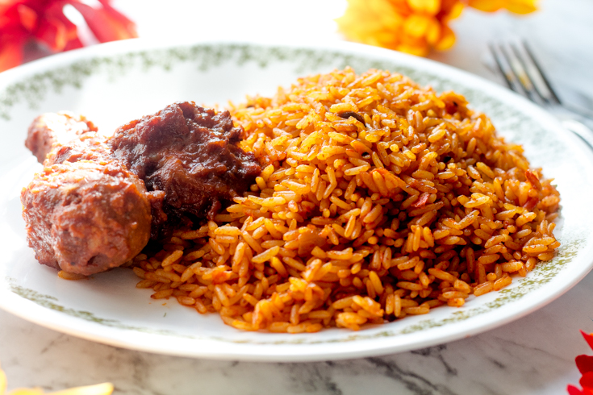

An Incredibly Tasty West African Dish
Jollof Rice or Jellof Rice is a rich and incredibly tasty
West African one-pot meal. It is a very versatile dish, and
it is usually made from scratch using Rice, Tomatoes, Pimento peppers,
Tomato paste, Scotch bonnet, Onions, Salt, and other spices.
Jollof Rice is one of the most common West African dishes eaten in the regions
of Nigeria, Ghana, Togo, Senegal, Gambia, Mali, Sierra Leone, Ivory Coast, Cameroon,
and Liberia. However, each of these West African countries has their own variation of
this meal. It is inexpensive and easy to make yet, delicious.
Ingredients
- 5 medium sized Roma tomatoes, roughly chopped
- 1 red bell pepper, roughly chopped
- 1 medium sized onion, roughly chopped, set aside
- 2 scotch bonnet peppers
- 1/4 cup of groundnut oil
- 3 tbsp tomato paste
- 2 cups of parboiled rice
- 2 1/2 cups of chicken stock
- 1 tsp salt to taste
- 1/2 tsp curry powder
- 1/2 tsp thyme
- 1 tsp All purpose seasoning
- 1 Knorr stock cube
- 3 bay leaves
- Water, as needed
Directions
-
Blend your tomatoes, red pepper, scotch bonnet peppers in a food processor
or blender for about 45 seconds, make sure that everything is blended well.
-
In a medium sized pot, heat your oil on medium-high heat. Once the oil is
heated add the onions you set aside and fry just until they turn golden brown.
Once the onions, have turned brown in color add the tomato paste and fry for
2-3 minutes. Then add the blended tomato mixture (reserve about 1/4 cup and
set aside) and fry the mixture with the onions and tomato paste for about 30
minutes. Make sure you stir consistently so that the tomato mixture does not burn.
-
After 30 minutes, turn the heat down to medium, and add the chicken stock. Mix
and add your seasonings (salt, curry powder, thyme, all purpose seasoning, and
the Knorr stock cube). Continue to boil for 10 minutes.
-
Add the parboiled rice to the pot. Mix it very well with the tomato stew. At this
point if you need to add water so that the rice is level with the tomato mixture/chicken
stock go ahead and do so. Add the bay leaves, cover the pot, and cook on medium to low
heat for 15-30 minutes.
-
When the liquid has almost dried up add the remaining tomato stew, cover, and let it cook
for another 5-10 minutes heat until the liquid has completely dried up. Turn off the heat,
mix thoroughly, and your Jollof Rice is ready to be eaten!
Return to top
Return to homepage